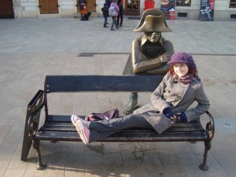

U Milíčových se opět vaří :-)! Vzhledem k tomu, 쬰 u bezmála tři týdny marodíme a nějak se pořád nem콢쬰me dokonale vyl칠캜it, rozhodla jsem se zapojit všechny tajné zbraně a babské recepty. Kdy jsem pak v časopise Ona Dnes objevila speciál o zelí z cyklu Bohyně české kuchyně, rozhodla jsem se přijmout výzvu a vydala se do Alberta na zdravý zelný nákup…Výsledek byl překvapivě chutný, tak쬰 pokud zrovna taky marodíte a potřebujete vitamínovou bombu, nechte se inspirovat ;)…
Zelné placičky (zelňáky)
Budeme potřebovat:
jednu zavařovačku kysaného zelí
400 g hladké mouky
1/4 l쬴캜ky kypřícího pr치코ku
2 vejce
sůl a mletý pepř
sádlo na opékání
Kysané zelí vymačkáme a překrájíme (já nekrájela a podle mě je to zbytečná práce navíc, tak쬰 vy taky nemusíte ;)…). V míse zpracujeme kysané zelí, prosátou mouku s kypřícím pr치코kem (vzhledem k tomu, 쬰 naše domáctnost nedisponuje kuchy켿skými vahami, sypu v쬯ycky mno쬽tví podle oka), vejce, sůl a koření na tu쮄뫆 těsto. Já jsem do těsta ještě vmíchala kmín (doporučuju :-)) a trochu majoránky. V pánvi rozpálíme trochu sádla (my jsme dali přednost olivovému oleji) a na něm dozlatova opékáme po obou stranách placičky o velikosti karbanátku nebo menšího bramboráku. Takto postupně upečeme všechny zelňáky, klademe je na papírový ubrousek, aby se odsál přebytečný tuk, a podáváme.
Péťa se po nich mohl doslova utlouct a pravil, 쬰 mu chutnají víc ne bramboráky, co pro mě byla dobrá zpráva, proto쬰 zelňáky nedají ani zpoloviny takovou práci, a musím říct, 쬰 byly opravdu výborné hned na první pokus (dělali jsme je u dvakrát :D…). Velebím rubriku Bohyně české kuchyně :D!
Proto쬰 jsem z Alberta přinesla opravdu slušnou zásobu zelí, rozhodla jsem se k plackám vyrobit ješt캩…
Zelný salát se slaninou
Nachystáme si:
1 zavařovačku zelí
sůl
4-6 l쬴c jablečného octa
1-2 l쮂셖e cukru krupice
150 g anglické slaniny na kostičky
Zelí vlo쮂셠e do mísy, osolíme a m콢쬰me přidat nasekaný svazek čerstvého kopru (ten jsme neměli). Zelí ochutíme octem (já pou쬴la balzamikový) a cukrem a necháme chvíli odle쬰t. Slaninu nakrájíme na kostičky a opečeme na l쮂셖i oleje dokřupava. Opečenou slaninu vmícháme do salátu a podáváme…nejlíp s kefírem :-)!
Pravidelní čtenáři Milíč-blogu si mo쬹치 pamatují na mou vánoční 칩du na Roalda Dahla, jeho souhrnné vydání nejlepších povídek mi přinesl Je쮂솬면k. Hned na 칰vod musím konstatovat, 쬰 první svazek byl prostě nepřekonatelný a jeho kvalit povídky z druhého svazku zkrátka nedosáhly. Bylo to asi hlavně z toho důvodu, 쬰 se zde objevilo více válečné tematiky, co mě u v prvním díle obt캩쬺valo a kazilo pozitivní dojem z kn칤쬶y. Na druhou stranu ale Dahl ve druhém svazku nezklamal ani ty, kteří si libují v poutavém vyprávění a hlavně nečekaných koncích :-)…Tentokrát u mi nebude činit problém vypíchnout ty nejzajímavější povídky, které rozhodně stojí za přečtení.
Pan Feasey – do poslední chvíle napínavý příběh odehrávající se v prostředí psích závodů a vyprávějící o lidech, kterým lest a podvod nejsou cizí.
Paní Bixbyová a ko쬴ch od plukovníka – pro mě jeden z vůbec nejpřekvapivějsích a nejzajímavějších příběhů kn칤쬶y pojednávající o tom, 쬰 쬰nské jsou sice podlé a proradné mrchy, ale to není zdaleka nic proti tomu, jak jim to občas mu쬴 dok치쮂 vracet i s 칰roky 游땙 …
Paní domácí – na Dahla a tém캩콏 hororová povídka, které musím strhnou body snad jen za to, 쬰 v čtenáři dok치쬰 vzbudit stup켿ující se pocit hrůzy a napětí, který kvůli „otevřenému“ závěru vyzní trochu naprázdno. I tak bych ale nedoporučovala 캜칤st si zrovna tuto povídku na dobrou noc 游땙 …
Skopové na por치쬶u – tento příběh mi strašně připomínal povídku A perfect crime z jednoho dílu učebnice Headway, nem콢쬿 si pomoct, ale někdo tady od někoho evidentně musel opisovat :D…Roald Dahl ovšem pro svou povídku vymyslel mnohem zajímavější vra쬰dnou zbra켿 :D…nevěra se holt někdy nevyplácí :D…
Stopař – 칰směvný příběh o tom, 쬰 i dobře vykonané zlo m콢쬰 dojít uznání 游땙 …
To sladké tajemství 쬴vota – inspirativní návod pro všechny, kteří zrovna intenzivně pracují na potomstvu :D…
Velká šoupaná – povídka, u které jsem se hodně nasmála. Dva sousedé se rozhodnou vyměnit si na jednu noc man쬰lky…ani by to jejich 쬰nušky ovšem zpozorovaly :D…Jak se jim celá akce podaří a jak jejich noční dobrodru쬽tví rozv칤콏칤 poklidné vody dlouhotrvajícího man쬰lství? Nechte se překvapit :D…
Vzhůru k nebesům – při hlasování o nejdrsnější povídku svazku a nejchladnokrevnější postavu suverénně vyhrává tato 游땙 . Na první pohled obyčejný příběh dvou stárnoucích man쬰lů – neurotické paní Fosterové a jejího mu쬰 Eugena vy쮂셨ajícího se v provokacích jeho paranoidní 쬰nušky. Ka쬯치 sranda ovšem něco stoj칤…
Tak doufám, 쬰 jsem vás svými 칩dami na Roalda Dahla navnadila a zkusíte si od něj taky něco pře캜칤st. Momentálně s Péťou do캜칤táme jednu z jeho kn칤쬰k pro děti, tak쬰 je jasné, 쬰 Dahlovo jméno rubriku Úryvky asi jen tak neopustí :-)…
Ačkoliv se Agatha Christie objevuje v mojí čtenářské rubrice poprvé, její jméno jistě nebude nikomu neznámé. Přibalila jsem ji ke svým výpůjčkám v knihovně tak nějak náhodou, kdy jsem bloumala okolo regálů, kde jsme si s holkama svého času s nadšením půjčovaly Stopy Hrůzy :D…Proto쬰 mi i název kn칤쬶y byl docela povědomý, nadchla jsem se pro novou čtenářskou zkušenost. Deset malých černoušků jsem si rozečetla během týdne tráveného na „prázdninách“ v Krom캩콏칤쬴, ale proto쬰 jsem pak byla nucená při balení zpátky do Brna volit mezi detektivkou a literaturou k diplomce, zvolila jsem v náhlém zápalu aktivity druhou variantu a celých 14 dnů si pak v Brně nadávala a přem칳코lela, kdo je vrahem :D…
Agatha Christie napsala celkem 70 románů, 21 her, 15 povídkových kn칤쬰k a 2 sbírky ver코콢. Vrcholu tvůr캜칤 aktivity a popularity dosáhla tato mistryně šarád a falešných stop ve třicátých letech. Z tohoto období pochází i kniha Deset malých černoušků, která byla několikrát zfilmována i zdramatizována a v캩콏te nebo ne, vznikla podle ní dokonce i po캜칤tačová hra. Tomu u se říká pořádně inspirující matroš :D! Nechci z děje prozradit příliš, ale kdy budete kn칤쬶u 캜칤st, stejně vás do toho Agatha postupně tak zamotá, 쬰 nebudete vůbec vědět, která bije, nato kdo je strůjcem všech těch vra쬯…
Tak tedy – do luxusního sídla na odlehlý Černochův ostrov je pod různými záminkami vylákáno deset naprosto odlišných lid칤…odlišných, a přesto mají všichni jedno společné. Ka쬯칳 z nich způsobil – a콘 u náhodou, nedbalostí či 칰myslně – smrt jiného člověka, ani by za to nesl trest. Kdosi organizující celou tuto prapodivnou a zvrhlou hru touží vzít spravedlnost do vlastních rukou…a tak na ostrově za캜칤nají návštěvníci jeden po druhém za záhadných okloností umírat. Nejprve to vypadá jako série ne코콘astných náhod…kdy ale ze stolu v jídelně začnou postupně s přibývajícími nebo쬾칤ky mizet sošky malých černoušků, zbývajícím trosečníkům dochází, 쬰 jeden z nich je vrah a šílenec. Jen쬰 který z nich to je? V캩콏te mi, 쬰 do poslední chvíle to nebude vědět ani sám čtenář :D…
Agatha Christie mě svým klasický thrillerem opravdu navnadila, a tak si na letní prázdniny jistě připravím slušnou zásobičku jejích dalších detektivek…do té doby se ovšem budu muset na nějaký čas vrátit k obchodnímu právu , aby mě nějaké prázdniny vůbec čekaly 😛 :D…
Druhý dnešní recept asi vezmu stručně – očka se mi toti kl칤쮂 :)…Vařící rubriku nám v tomto případě rovně obohatil magazín Albert a díky zelené příloze tento pokrm působí jako pastva pro oči a snad i pro 쬬ludek – nevím jak vy, ale já mám barvy na tal칤콏i ráda :D. Na nákupní seznam si napište:
kuřecí prsa
125 ml balzamikového octa
3 l쮂셖e olivového oleje
2 l쬴캜ky mořské soli
pepř
200 g sýru s modrou plísní
140 g polníčku
170 g cherry rajčat
Kuřecí maso přendáme do uzavíratelné plastové krabičky. Balzamikový ocet, olej, jednu a půl l쬴캜ky soli a 1 l쬴캜ku pepře smícháme v misce. Marinádou přelejeme kuřecí maso a krabičku uzavřeme. Necháme marinovat alespo켿 10 minut, ideálně ale déle. Poté si rozpálíme pánev, trochu ji potřeme olejem a opečeme na ní maso, které podle chuti ještě m콢쬰me dosolit a dopepřit. Hotové maso přendáme na tal칤콏 a ka쬯칳 kousek ozdobíme dvěma plátky plís켿ového sýru. Podáváme s čerstvým pečivem oblo쬰né salátem z polníčku a cherry rajčat. Proto쬰 měli zrovna ten den v obchodě pěkné ředkvičky, pou쬴la jsem místo rajčat je – barevný efekt splnily stejně dobře a i chu콘ově se k pokrmu výborně hodily. Zeleninu m콢쬰me ještě před podáváním pokapat olivovým olejem. Lehký a chutný oběd či večeře je na světě :-).
만divých zimních dnů ubylo, sníh nám (u snad definitivně) roztál, a tak to vypadá, 쬰 k nám konečně zase přichází jaro a s ním i počasí přející výletům! O víkendu jsme tedy s Péťou podnikli první malý jarní výlet na Slovensko – volba padla na Bratislavu, proto쬰 tam ani jeden z nás ještě nikdy nebyl a navíc je to z Brna opravdu kousíček. Ještě te캞 nem콢쬿 chodit, ale ta spousta z치쬴tků za to určitě stála :-)!
Na cestu jsme se vydali v sobotu ráno a díky uhánějícímu ECčku jsme u za hodinu a půl stáli na bratislavském nádraží. Sluníčko na obloze slibovalo hezký den a sotva jsme se trochu zorientovali, vyrazili jsme do centra hledat n치코 hostel, abychom se mohli ubytovat a hned se vydat obhlídnout město. Docela mě překvapilo, jak je ve slovenské metropoli v sobotu ráno mrtvo :D. Hostel se nám podařilo nalézt celkem bez obt칤쮂, nachází se v těsné blízkosti prezidentského paláce. Kdy jsme ale vstoupili dovnitř budovy, vypadalo to, 쬰 nejsme vůbec očekáváni 游 – recepce toti byla zamčená a nikde ani noha. Proto쬰 jsem organizací ubytování byla pov캩콏ena já, trochu mě polilo horko a začala jsem uva쬺vat, kde dnes budeme nocovat, pokud ubytování v hostelu krachne :D…Naštěstí jsme na dveřích objevili nápis s telefonním 캜칤slem, na kterém m콢쬰me majitele hostelu v případě nepřítomnosti zastihnout, tak쬰 jsme mu poslali SMSku a během dvou minut nám zavolal, 쬰 u je na cestě do práce. Trochu se mi ulevilo, ale ne příliš udr쬺vané prostředí panelákové chodby ve mně moc důvěry zatím nevzbuzovalo – zvl치코콘 kdy jsem si vzpomněla na krásné webové stránky hostelu, nad kterýma jsem se rozplývala a jásala, jak se mi povedlo sehnat báječné a levné ubytování :D. Naštěstí se vše brzy osvětlilo, kdy dorazil majitel – mladý týpek pomalu našeho věku, který nás očekával a v 11, jak jsem uvedla při rezervaci do mailu (nechala jsem nám časovou rezervu, proto쬰 jsem si nebyla jistá, jak rychle se nám podaří hostel najít). To ale samozřejmě nic nemění na faktu, 쬰 na webových stránkách měli uvedeno, 쬰 recepce je otevřená od 8 do 18ti hodin 游땙 …N치코 pokoj tedy ještě nebyl uklizený a ubytovat jsme se zatím nemohli. Kdy nám ale týpek sdělil, 쬰 během půl hodiny bude vše připraveno a m콢쬰me zatím počkat v 칰tulném prostředí recepce a vyu쮂셦 po캜칤tače s internetem, vzali jsme ho na milost 游땙 . Volný čas jsme alespo켿 vyu쬴li k tomu, 쬰 jsme si naplánovali trasu, kterou zvolíme pro obhlídku města, a stáhneme si informace o keškách, na které jsme měli políčeno.
Sotva jsme měli hotovo, u tu byl týpek s tím, 쬰 se m콢쬰me jít ubytovat. Ukořistili jsme ještě na recepci mapku a nechali si v ní vyznačit zajímavá místa a dobré restaurace a šli se podívat do našeho pokojíčku v prvním patře. Ten mě zase prozměnu příjemně překvapil svou 칰tulností a vybavením včetně televize, wi-fi nebo varné konvice i s několika druhy čaje. Te캞 u bylo jisté, 쬰 máme dnes večer kde hlavu slo쬴t a dokonce to bude ve velmi příjemném prostředí, a tak u jsem se celá 코콘astná nemohla dočkat, a vyrazíme ven.
Jako první vedly naše kroky k prezidentskému paláci, který se nacházel od našeho hostelu coby kamenem. K paláci patří i nádherný park, kam jsme si šli ulovit první bratislavskou kešku :-)! Zajímavostí tohoto parku je prezidentská alej, která vznikla za vlády prezidenta Schustera a tvoří ji stromy zasazené hlavami států různých zemí – mimo jiné je tu k vidění také strom zasazený našim bývalým prezidentem Havlem.
S první odlovenou keškou jsme pokračovali do poněkud méně malebné 캜치sti Bratislavy a cestou jsme míjeli například děsivě obrovskou a děsivě zanedbanou fontánu, která vypadala, 쬰 dobře pamatuje minulý re쬴m, nebo chemickou fakultu, u které nás zaujala vtipná Mendělejevova socha s periodickou soustavou prvků :-).
Mendělejev a bývalý chemik :)
Během prvního dne jsme velice rychle zjistili, 쬰 centrum Bratislavy je vpodstatě strašně maličké a všude je to blízko. Všechny důle쬴té památky jsou od sebe vzdálené většinou jen pár minut chůze. Proto jsme se při kešování neustále motali v centru a ikdy jsme měli dojem, 쬰 jsme nachodili spoustu mil, nevzdálili jsme se od hostelu víc ne na půl hodinky cesty. Bratislava jako město na mě zapůsobila dost rozporuplně – na jednu stranu tu člověk narazí na nádherné a zajímavé stavby, zejména v historickém centru, na druhou stranu ale m콢쬰 zabloudit i do míst, která působí dost zanedbaně a neudr쬺vaně, prostě tak nějak průmyslově a socialisticky. Kdy pak takové dvě kontrastní budovy stojí vedle sebe, člověk z toho má dost rozpačitý dojem. Historické centrum je ale opravdu velice hezké a upravené a navíc nabízí i zajímavou kuriozitu v podobě několika vtipných soch rozmístěných v uličkách Starého Města :-)…
Péťa a Napoleonský voják :)Lehárko na Hlavním náměst칤맜ihák ;)Péťa a Čumil :)
Krom těchto bratislavských kuriozit jsme samozřejmě viděli i řadu klasických památek, jako Slovenské národní divadlo, Michalskou bránu a vedle ní neju쮄뫆 bratislavský dům, který m캩콏칤 v pr콢캜elí jen 130 cm :O…Na dla쬭캩 pod Michalskou bránou nás pak ještě zaujal kompas se zakreslenými světovými metropolemi, a tak jsme pro naši kamarádku Phyllis vyfotili, jak daleko to máme z Bratislavy do Hong Kongu :))…
Mooooooc daleko :)!Asi taaaaakhle!
V sobotu jsme centrum prolezli jen tak zlehka s tím, 쬰 na druhý den si ho ještě dosyta u쬴jeme, a vpodvečer jsme se vydali na procházku po nábřeží, dokud nám sluníčko přálo. Na břehu Dunaje mi znovu došlo, jak kontrastní město Bratislava je. Proto쬰 z mého pohledu nám tady slovenská metropole ukázala svou nejkrásnější tvář :-)…
Dunaj a my
Na nábřeží a řeky jsem tak trochu ujetá (o řece Moravě jsem psala i maturitní slohovku :D), ale ospalé sluníčko ten den vylákalo k Dunaji spoustu lidí, co mě jen utvrdilo v tom, 쬰 se skutečně nacházíme na jednom z nejkrásnějších míst v Bratislavě a nejsem a tak moc zaujatá :D. Při této procházce si nešlo nepovšimnout rozsáhlého komplexu budov, který se táhne tém캩콏 po celé délce břehu mezi starým a novým mostem. Zpo캜치tku jsem si myslela, 쬰 se v něm nachází jen nějaké kavárny a restaurace, ale kdy jsme došli blí, zjistili jsme, 쬰 se jedná o obří nákupní galerii na způsob naší brněnské Va켿kovky, ale mnohem větší, hez캜칤 a luxusnější. Docela se nám hodila do krámu, proto쬰 u řeky dosti přituhlo, a za touhou podívat se dovnitř honosného obcho캞치ku Eurovea jsem skrývala skromné přání pořádně se ohřát :D. Nebyla jsem zklamána, Eurovea byla krásně přetopená přesně podle mého gusta :D! Proto쬰 sluníčko u začalo zapadat, rychle jsme vyrobili několik posledních romantických fotek s Dunajem, a vypravili jsme se pro kešku k novému mostu.
Při lovu jsme byli 칰sp캩코ní a to i přesto, 쬰 jsme si popletli hinty a hledali jsme podle špatné nápovědy 游 – prolomili jsme tak naši smůlu mostových kešek a mohli jsme se 코콘astní a ztuhlí zimou vydat domů. Cestou jsme se ještě stavili v Eurovee pro vínečko, brambůrky a olivy na večer a nakonec jsme zapadli do jedné stylové hospůdky na náměstí Slovenského národního povstání, kterou nám doporučil týpek z hostelu, a pořádně se tam nadlábli :-). To u jsme přecejen začali poci콘ovat 칰navu a bolavé no쬶y, tak쬰 není divu, 쬰 jsme záhy po příchodu na pokoj odpadli na postel. Nakopla nás jenom vidina vínečka, po kterém se nám spalo ještě líp :-)!
Na druhý den jsme se pěkně odpočatí vydali prozkoumat pravděpodobně nejznámější bratislavskou památku – místní hrad. Dovnitř se budeme muset podívat někdy p콏칤코tě, proto쬰 na hradě právě probíhá rozsáhlá rekonstrukce, ale výhled na město byl nádherný.
V parku pod hradem se nám málem podařilo ztratit 游 – chvíli nám trvalo, ne jsme narazili na tu správnou cestičku, která by nás zavedla k zámeckým schodům vedoucím do centra. Nakonec se nám ale podařilo najít ten správný chodník a vylezli jsme přímo u mostu s „UFEM“ :D. Na něm se skrývala další keška a přesto쬰 byla „mostov치“, našli jsme ji celkem hravě :-). Při procházce po nábřeží nám u celkem vyhládlo, a tak jsme se rozhodli vrátit do centra a navštívit další z doporučených podniků a naobědvat se. Obě dvě restaurace, které jsme v Bratislavě navštívili, byly obrovské a stylově zařízené. První vítězila interiérem – vypadalo to, 쬰 se jedná o nějaký přebudovaný kulturák s bárem přímo pod p칩diem. Co se ale t칳캜e jídla, suverénně zvítězila Slovak pub na Obchodné ulici. Dali jsme si stylově bryndzové halušky a během minuty se po nich doslova zapr치코ilo 游 – mno, mám ještě v kuchyni co zdokonalovat :D!
Co dodat - dobrota :)!
Takto posilněni jsme se opět vydali zkoumat malebné uličky bratislavského centra a posbírat při té příle쬴tosti několik kešek. Díky kešování jsme objevili další zajímavou místní kuriozitu – zvonkohru – devět „dla쬯iček“, které po došlápnutí hrály :D! Tahle atrakce fascinovala hlavně děti a byli jsme svědky toho, 쬰 u způsobila nejedno rozbité koleno :D. Solidárně jsem si taky trochu zaf켿ukala, proto쬰 jsem chytla křeč do nohy :D. Naše další kroky vedly na Františkánské náměstí, jeho zajímavost se rovně nachází na dla쬭캩 – jedná se o několik dla쬯iček ozdobených všemo쬹칳mi obrázky – například 칰sty Franka Sinatry, hehe :D. Čas se pomalu nachýlil, a proto쬰 jsme chtěli stihnout vlak v 6 hodin, vydali jsme se za poslední zajímavou bratislavskou památkou – secesním Modrým kostelíkem. Je skutečně modrý od hlavy a k patě (včetně střechy), a proto쬰 jsme nakoukli i dovnitř, m콢쬰me potvrdit, 쬰 má dokonce i modré lavice :)!!! Vypadá zkrátka jako vyloupnutý z nějaké pohádky :-)…
Modrá je dobrá :)
Tato optimistická modrá tečka byla příjemným završením našeho výletu do Bratislavy a navzdory bolavé noze a vlaku nacpanému k prasknutí jsem byla 코콘astná, 쬰 se nám to takhle pěkně vyvedlo – včetně počasí :-). Bratislava je rozhodně město, které stojí za vidění, a proto쬰 jsme u nestihli plánovaný výlet na Děvínský hrad, určitě se sem ještě někdy vrátíme. Do té doby budeme alespo켿 vzpomínat na tenhle příjemný březnový víkend :-)…
 a šli se podívat do našeho pokojíčku v prvním patře. Ten mě zase prozměnu příjemně překvapil svou 칰tulností a vybavením včetně televize, wi-fi nebo varné konvice i s několika druhy čaje. Te캞 u bylo jisté, 쬰 máme dnes večer kde hlavu slo쬴t a dokonce to bude ve velmi příjemném prostředí, a tak u jsem se celá 코콘astná nemohla dočkat, a vyrazíme ven.
a šli se podívat do našeho pokojíčku v prvním patře. Ten mě zase prozměnu příjemně překvapil svou 칰tulností a vybavením včetně televize, wi-fi nebo varné konvice i s několika druhy čaje. Te캞 u bylo jisté, 쬰 máme dnes večer kde hlavu slo쬴t a dokonce to bude ve velmi příjemném prostředí, a tak u jsem se celá 코콘astná nemohla dočkat, a vyrazíme ven.


{kind=link}
{kind=link}
{kind=link}
{kind=link}
{kind=link}
{kind=link}
{kind=link}
{kind=link}